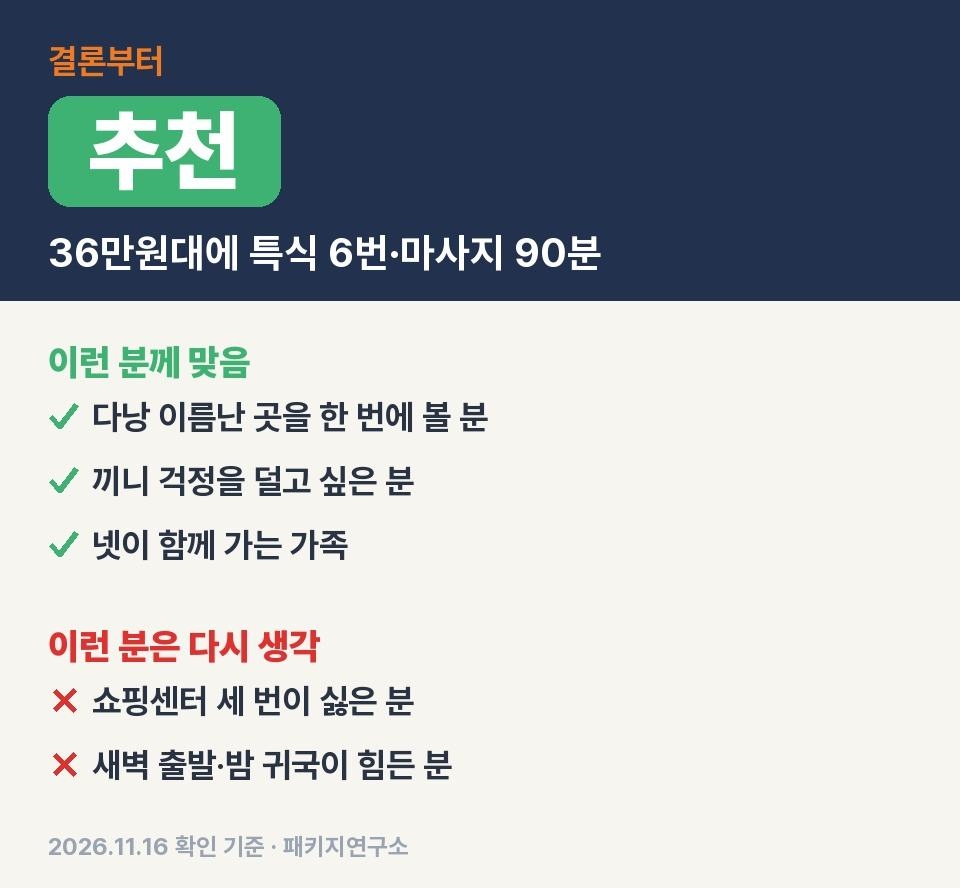
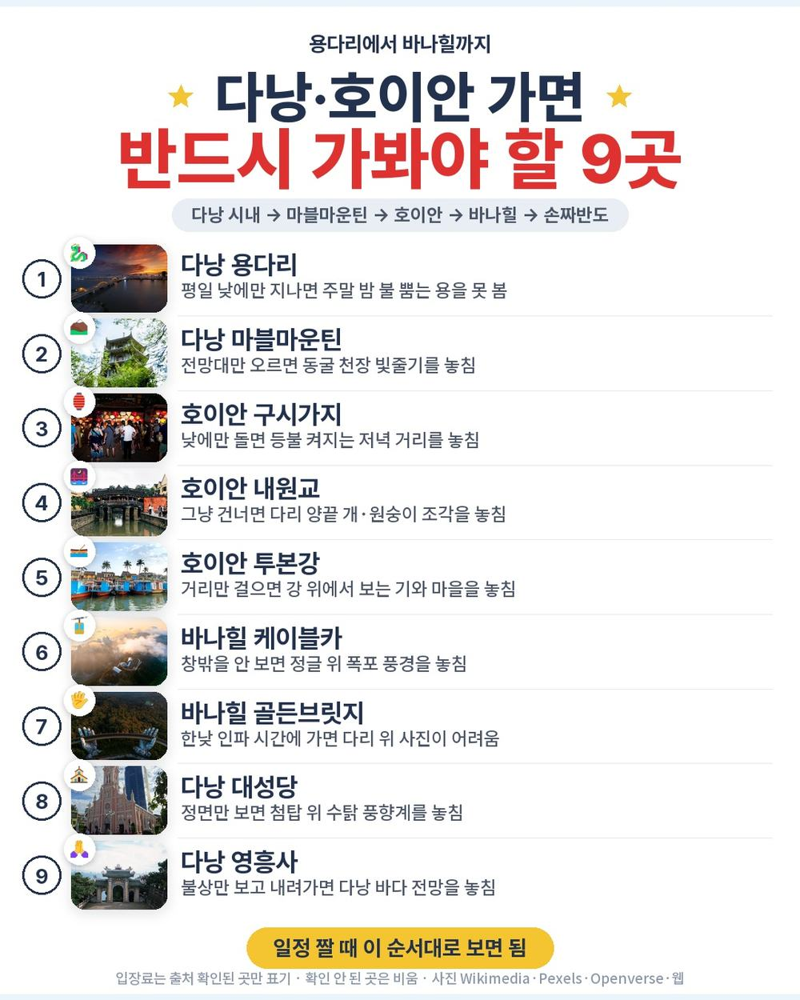
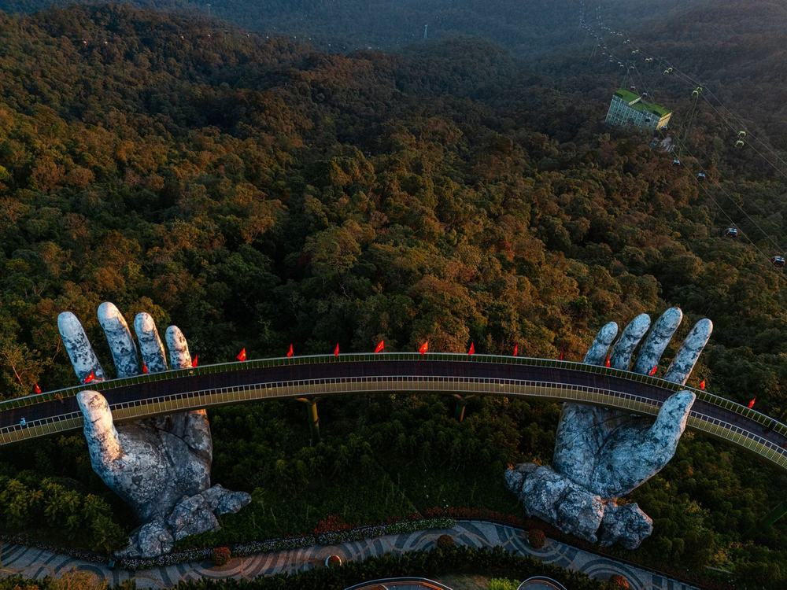
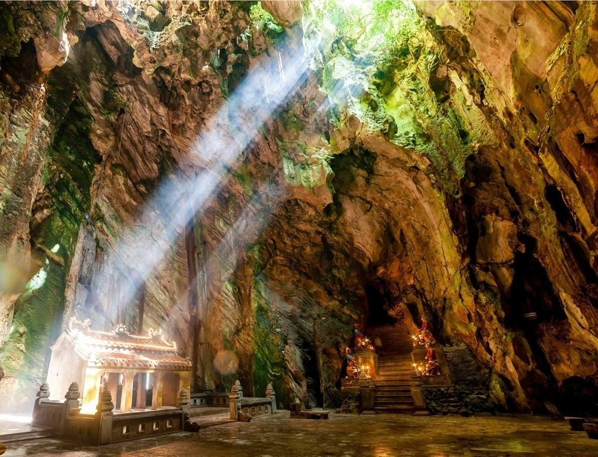
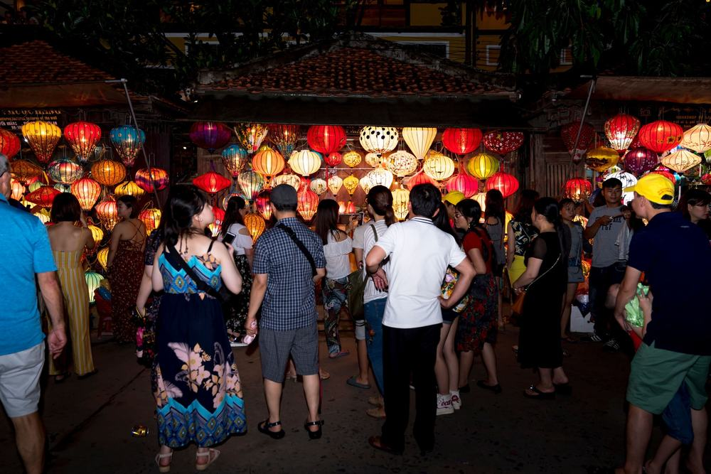

도착한 첫날 전신 마사지 90분을 받는 순서가 상품가 안에 들어 있고, 호텔은 세 밤 모두 5성급임.
이 글은 다녀온 후기가 아니고 상품 일정표와 포함·불포함 원문을 한 줄씩 따져 본 기록임.
결론 — 추천. 비엣젯 직항, 5성급 호텔 3박, 조식 3번과 특식 6번, 바나힐·호이안·마블마운틴·영흥사, 전신 마사지 90분이 36만 9,900원 안에 있음. 다만 쇼핑센터 세 번이 싫은 분은 맞지 않음.

오늘 기준 출발일별 요금 보기
https://naver.me/FG39mXDA

| 항목 | 내용 |
|---|---|
| 가격 | 1인 369,900원 (성인·소아 같음 · 12월 출발 기준) · 2인 739,800원 |
| 여행사 | 노랑풍선 |
| 항공 | 비엣젯항공 직항 (VJ879·VJ878) · 인천 07:00 → 다낭 10:05 / 다낭 23:40 → 인천 06:00 |
| 숙소 | 5성급 3박 · 그랜드투란·무엉탄 럭셔리·골든베이·어웨이큰 등 중 배정(지정 불가) · 일반 전망 |
| 일정 | 3박 5일 · 조식 3 + 특식 6 · 쇼핑 3회(각 1시간) · 가이드·기사 경비 1인 50달러 별도 |
▶ 내 출발일 오늘 기준 요금 확인 (제휴 링크 · 예약 시 수수료를 받으며 가격은 같습니다)
▶ 11월 16일 기준 다낭 패키지 최저 34만 9천원부터 — 출발일별 값 한 화면에: 비교 페이지
| 번호 | 내용 | 한 줄 답 |
|---|---|---|
| 1 | 이 값에 들어 있는 것 | 특식 6번 |
| 2 | 현장에서 더 낼 돈 | 2인 약 13만 4천원 |
| 3 | 일정과 체력 | 2일차가 제일 걸음 |
| 4 | 자유여행으로 짜면 | 항공값 조회 실패 |
| 5 | 맞는 분 · 안 맞는 분 | 3 대 3 |
30만원대 값에 5성급 세 밤과 특식 여섯 번, 마사지 90분까지 얹은 구성임.
- 항공: 비엣젯항공 인천–다낭 직항 왕복, 유류할증료·제세공과금 포함
- 숙소: 5성급 호텔 3박, 2인 1실, 방마다 과일바구니 1개
- 식사: 호텔 조식 3번 + 특식 6번(노니보쌈·호이안 전통식·샤브샤브·삼겹살·분짜 정식·제육쌈밥)
- 관광: 용다리·APEC 공원, 마블마운틴, 호이안 구시가지·투본강 투어, 바나힐 케이블카·골든브릿지, 다낭 대성당, 영흥사, 미케비치 자유시간
- 체험: 전신 마사지 90분(소아 제외, 매너팁 별도), 위즐커피 1잔, 한국어 가이드, 여행자보험

네 명이 같이 예약하면 골든베이 호텔 코너 스위트 2베드로 무료 업그레이드해 준다는 줄이 따로 있음. 방이 다 차면 일반 객실이라 예약할 때 미리 말해 두는 게 좋음.
꼭 더 내는 돈은 경비 50달러와 마사지 팁뿐이고 선택관광은 고를 때만 붙음.
| 항목 | 금액 | 필수/선택 | 비고 |
|---|---|---|---|
| 가이드·기사 경비 | 100달러 (약 13만 4천원) | 필수 | 1인 50달러, 현지 지불 |
| 마사지 매너팁 | 관례 1인 2~4달러 | 필수 | 원문 매너팁 안내 |
| 바구니배 | 1인 40달러 | 선택 | 2일차 추천 선택관광 |
| 호이안 시클로+야간투어 | 1인 50달러 | 선택 | 2일차 추천 선택관광 |
| 마사지 2시간 · 아오자이쇼 | 각 1인 40달러 | 선택 | 3일차 추천 선택관광 |
| 합계 (2인 필수분, 팁 빼고) | 100달러 (약 13만 4천원) | 1달러 약 1,336원 · 2026-11-15 환율 |
- 2인 총액(경비까지): 약 87만 3,800원, 1인 약 43만 6,900원
- 크리스마스·연말·연초 출발이면 호텔 써차지·갈라디너가 붙을 수 있음(예약 때 안내)
- 선택관광을 안 하면 호텔이나 근처에서 쉬며 기다림
걷는 양이 몰린 날은 2일차이고 비행은 새벽 출발·밤 귀국이라 앞뒤가 빡빡함.
| 일차 | 가는 곳 | 버스 | 걷기 | 점심 · 저녁 |
|---|---|---|---|---|
| DAY 1 | 인천 07:00 → 다낭 10:05 → 용다리·APEC 공원 → 전신 마사지 90분 → 호텔 | 약 1시간 | 적음 | 현지식 · 한식 |
| DAY 2 | 마블마운틴 → 호이안 구시가지 → 투본강 투어 → 다낭 | 약 2시간 | 중상 | 현지식 · 호이안 전통식 |
| DAY 3 | 바나힐 케이블카·골든브릿지 → 위즐커피 → 쇼핑센터 | 약 2시간 | 보통 | 한식 · 삼겹살 |
| DAY 4 | 다낭 대성당 → 영흥사 → 쇼핑센터 → 미케비치 → 공항 | 약 1시간 30분 | 중하 | 현지식 · 제육쌈밥 |
| DAY 5 | 다낭 23:40 출발 → 인천 06:00 도착 | 거의 없음 | 적음 | 없음 · 없음 |
- 비행: 갈 때 5시간 5분, 올 때 4시간 20분
- 비엣젯은 기내식이 없고 부치는 짐은 20kg까지임
- 2일차는 마블마운틴 돌계단과 호이안 골목을 한날에 걸음

마블마운틴은 계단과 동굴 바닥이 미끄러워 굽 없는 운동화가 편하다는 말이 가 본 사람들 글에 반복됨. 바나힐은 산 위라 서늘해서 겉옷 하나 있으면 좋음.
항공값을 오늘 조회하지 못해 합계는 못 냈고 직접 짜면 따로 챙길 칸만 적음.
| 항목 | 금액 | 근거 |
|---|---|---|
| 인천–다낭 직항 왕복 | 확인 못 함 | 2026-11-16 마이리얼트립 조회 실패 — 숫자를 지어내지 않음 |
| 5성급 호텔 3박 | 확인 못 함 | 날짜·호텔마다 다름 |
| 식사 | 따로 | 패키지는 조식 3번 + 특식 6번 포함 |
| 공항 이동 | 따로 | 패키지는 전용 차량 포함 |
| 바나힐 케이블카·마사지 | 따로 | 패키지는 포함 |
| 여행자보험 | 따로 | 패키지는 포함 |
| 가이드 | — | 자유여행은 없음 |
- 바나힐·호이안·마블마운틴은 서로 떨어져 있어 직접 가면 택시를 여러 번 잡아야 함
- 직접 짜면 마사지와 특식 여섯 끼도 따로 값이 듦
- 항공·호텔 실값은 날짜를 정한 뒤 견줘 보는 게 정확함

걸리는 건 쇼핑 세 번과 비행 시간이고 둘 다 누구에게만 문제인지가 분명함.
| 맞는 분 | 안 맞는 분 |
|---|---|
| 다낭 이름난 곳을 한 번에 볼 분 | 쇼핑센터 세 번이 싫은 분 |
| 끼니 걱정을 덜고 싶은 분 | 새벽 출발·밤 귀국이 힘든 분 |
| 넷이 함께 가는 가족 | 호텔을 미리 정해 두고 싶은 분 |
이 상품 게시판엔 음식이 맛있다, 일정이 알차다는 평이 제일 많이 쌓여 있음. 쇼핑센터 설명이 길어 지친다는 평도 몇 건 있으니 그 시간은 쉬는 시간으로 잡으면 마음이 편함.
Q. 다낭 패키지 가격은 이 상품이 얼마인가요?
A. 12월 출발 기준 1인 36만 9,900원, 2인 73만 9,800원. 출발일마다 값이 달라서 날짜별로 확인해야 함.
Q. 다낭 패키지 가이드 팁은 따로 내나요?
A. 냄. 가이드·기사 경비 1인 50달러를 현지에서 내고 마사지 매너팁도 따로임.
Q. 다낭 패키지 쇼핑은 몇 번 가나요?
A. 3번. 노니·침향, 잡화, 커피 매장에 각 1시간이고 방문 날짜는 현지에서 바뀔 수 있음.
30만원대 값에 5성급 세 밤과 특식, 마사지까지 들어간 구성.
쇼핑센터 세 번이 괜찮은 분, 특히 다낭이 처음인 부모님께 잘 맞음.
출발일에 따라 값이 달라서 가시려는 날짜 요금부터 확인하시면 됨.
오늘 기준 출발일별 요금 보기
https://naver.me/FG39mXDA
이 글에는 네이버 제휴 링크가 포함되어 있으며, 링크를 통해 예약하시면 일정 수수료를 받습니다. 가격은 동일합니다. 가격과 구성은 2026년 11월 16일 확인 기준이며 출발일에 따라 달라질 수 있습니다.
▶ 다낭 패키지 오늘 값 나란히 비교
▶ 같은 목적지 다른 여행사 패키지, 쇼핑·선택관광·가이드 경비까지 비교: pkg-lab.com